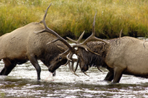

Eastern Idaho Photographic Society


©Roger Heng Oxbow Grand Teton National Park
The August 2003 issue of Outdoor Photographer listed Yellowstone Park as one of the top ten places in the world to take photographs of wildlife.
Yellowstone National Park is two hours from Idaho Falls and is one of our favorite photographic places. Yellowstone is the subject of many scenic
and wildlife photographs. The photographic possibilities are endless because YNP has different photographic possibilities every time one visits.
The Chamber of Commerce web page for West Yellowstone provides information
about nearby cites/towns, information on private tours, campgrounds, and other information
"Photographer's Guide to Yellowstone and Tetons", By Joseph K. Lange, Stockpile Books is useful book on photographing in Yellowstone.
 |
 |
 |  |
Bison |
|
Fighting Elk |
Volcanic Tableland |
© Scott Johnson 2006 |
©Roger Heng 2008 |
©John Beach 2007 |
©Nelson Sibulo 2011 |
 |
 |
 |
 |
Swan in Yellowstone |
Grand Prismatic Spring |
Yellowstone Falls |
Winter on Yellowstone River |
© Bill Drake |
©Nelson Sibulo 2011 |
© Rodney Jack 2006 |
© Roger Heng |
Photo Locations and Other Links
National Parks| Monument and Reserve| Bureau of Land Management| National Forests| Near By Ghost Towns| Near By Wildlife Refuges| Weather| Sunrise/Sunset Times | Photographers/Photo Clubs
Photographs Copyright© Photographer, Owner, or Eastern Idaho Photographic Society. Photographs
may not be reproduced in any manner without written permission.
Web Page Copyright© 2011 Eastern Idaho Photographic Society